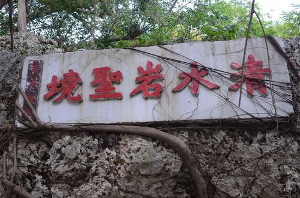
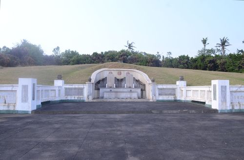
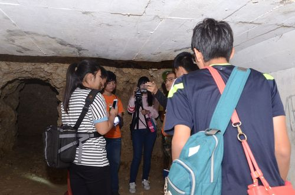

【一、 清水巖風景區】位於潭頭里鳳凰山麓（潭頭山），全區均由珊瑚礁石灰岩所構成，在日據時期是高雄州八景之一，山明水秀，靈泉幽谷，風景宜人，大白天這裡是居民運動及大唱卡拉OK的休閒場所。由珊瑚礁石所形成的景觀眾多，有一傘亭、中山崗、等多處，居高可遠眺林園區境，琉球嶼亦隱約可見，甚至恆春大武諸山亦歷歷在眼前。此園區可見到眾多的高官、名人提字，不知是否和這座山是現任立法院長王金平有關(據當地居民口述)。 資料來源：林園區公所全球資訊網 |
 |
【二、 唐榮墓園】位於清水巖岩景區的最上方，是高雄名人唐榮先生與夫人身後長眠之地，他的兒子唐傳宗在園內建有「報恩樓」一座以紀念其父親，並有小羊跪乳，烏鴉反哺的塑像，深具教育意義。唐傳宗去世後與其夫人亦長眠於此，在他們的墓塚兩側可以看到過去許多政商名人所寫的哀悼文。園內遍植椰子樹、水果、奇花異卉，派有專人管理，環境清幽。現在免費開放給民眾隨意進入健身運動。 註：「忠烈四友」是指陳誠(前副總統)、黃占岸(林園名人)及唐傳宗父子，在清水巖區可看到此四人的銅像。 資料來源：林園區公所全球資訊網 |
 |
【三、 日據時代隧道遺址】位於清水巖區內清水寺正後上方，該隧道係日據時期日軍徵曰林園區民一斧一鋤，逐步開鑿而成。根據地方耆老指出，主隧道由林內里的鳳山水庫經清水巖，到中門里的鳳鼻頭，而支隧道盤根錯節，目前在清水岩上的龍蟠洞一帶較安全，但要進入時仍應裝備齊全，而且不要把垃圾留在隧道內。 資料來源： 拍攝 |
 |
【清水巖特色文化】-網頁製作心得 |
3年2班張簡澤承、蔡佳惠 |
|
清水巖歷史文化心得:在這個頁面裡讓我學習到了許多豐富的知識，尤其在清水巖的歷史文化，讓我知道其實清水巖裡有許多美景.還有洞窟裡的奇景，當第一次見到清水巖裡的洞窟時，覺得裡面的景觀非常的奇特，給人一種想要一探究竟的感覺，在探索山洞的旅途雖然發生了大大小小的事，但還是平平安安地出來了，總之這趟旅行讓我更加深入了解清水巖了。 |
|